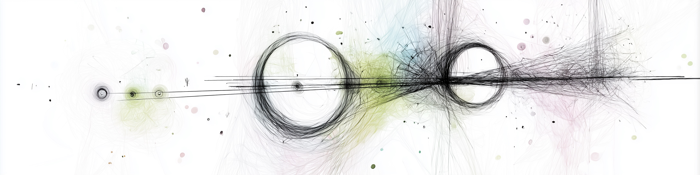

def funktionsname(argument1, argument2):
# Funktionskörper
print("Der Typ von Argument 1 ist "+str(type(argument1)))
print("Der Typ von Argument 2 ist "+str(type(argument2)))Funktionen

A function of good software is to make the complex appear simple.
— Grady Booch
Funktionen
Funktionsdefinition und Funktionsaufruf
Alle höheren Programmiersprachen erlauben die Definition von Funktionen (oder Prozeduren), um sich ständig wiederholenden Code nur einmal schreiben zu müssen und komplexe Programme zu strukturieren.
Funktionen werden in Python mit dem Schlüsselwort def definiert. Sie haben einen funktionsnamen und können mehrere Argumente als Eingabe in einer Klammer haben. Die Deklaration der Funktion wird mit : beendet. Der Körper der Funktion, also der Teil, welcher beim Aufrufen der Funktion ausgeführt werden soll, muss immer eingerückt werden.
Hierbei müssen alle Teile der Funktion gleich eingerückt werden. Der folgende Code ist z.B. syntaktisch falsch
def funktionsname(argument1, argument2):
# Funktionskörper
print("Der Typ von Argument 1 ist "+str(type(argument1)))
print("Der Typ von Argument 2 ist "+str(type(argument2)))Cell In[2], line 4 print("Der Typ von Argument 2 ist "+str(type(argument2))) ^ IndentationError: unexpected indent
Beim Aufruf der Funktion durch den funktionsname(wert1, wert2) müssen die Argumente mit Eingabewerten belegt werden. Die Argumente in Python werden wie andere Variablen dynamisch typisiert (wir wissen also nicht unbedingt, welchen Typ sie später haben werden. Das ist eine typische Fehlerquelle).
funktionsname("wert1", 2)Der Typ von Argument 1 ist <class 'str'>
Der Typ von Argument 2 ist <class 'int'>Das entscheidende ist, dass die Argumente ihre Werte ändern können.
funktionsname("anderer wert ", "noch ein anderer")Der Typ von Argument 1 ist <class 'str'>
Der Typ von Argument 2 ist <class 'str'>Ergebnisrückgabe
Die Anweisung return wird in Funktionen benutzt, um die Ausführung einer Funktion zu beenden und den zugewiesenen Wert(e) als Ergebnis der Funktion zurückzugeben.
def funktion_mit_einer_ausgabe():
return "Ausgabewert"
print("Dieser Teil wird nicht ausgeführt")
return "Anderer Ausgabewert"ergebnis = funktion_mit_einer_ausgabe()
ergebnis'Ausgabewert'Wir sehen, dass das Ergebnis Ausgabewert ist und die print() Funktion nicht aufgerufen worden ist.
Es können mehrere Ausgabewerte mit return zurückgegeben werden.
def funktion_mit_zwei_ausgaben():
return "Ausgabewert1", "Ausgabewert2"ergebnis = funktion_mit_zwei_ausgaben()
ergebnis('Ausgabewert1', 'Ausgabewert2')Das Ergebnis von Funktionen mit mehreren Rückgaben ist ein Tuple.
type(ergebnis)tupleAuf die einzelnen Werte im Tuple kann durch den Index zugegriffen werden. Zur Erinnerung der Index einer Liste oder eines Tuples startet mit 0.
ergebnis[0]'Ausgabewert1'Das Tuple kann allerdings auch durch Mehrfachzuweisung verhindert werden. Bei einer Mehrfachzuweisung listet man mehrere durch Komma getrennte Variablen links von der Zuweisung auf.
ergebnis1, ergebnis2 = funktion_mit_zwei_ausgaben()
print(ergebnis1)
print(ergebnis2)
print(type(ergebnis1))
print(type(ergebnis2))Ausgabewert1
Ausgabewert2
<class 'str'>
<class 'str'>Standardwerte und veränderliche Standardwerte
Parameter können einen Standardwert besitzen, etwa def measurement(number, unit="meters"). Beim Aufruf ist das Argument dann optional; ein übergebener Wert überschreibt den Standard.
Ein veränderlicher Standardwert wie liste=[] wird nur einmal beim Definieren der Funktion erzeugt, nicht bei jedem Aufruf. Alle Aufrufe teilen sich dieselbe Liste, und der zweite Aufruf von sammle_messwerte(2) liefert [1, 2]. Üblich ist deshalb liste=None mit einer Prüfung if liste is None: liste = [] im Funktionskörper. KI-generierter Code enthält dieses Muster gelegentlich; prüfen Sie Standardwerte vom Typ list, dict und set.
Variablengültigkeit
Variablen innerhalb von Funktionen sind nicht global gültig. So sind die Variablen der Argumente nur innerhalb der Funktion gültig. Auch neue Variablen, die in der Funktion definiert werden, sind nicht außerhalb der Funktion gültig. So sind in der folgenden Funktion:
def meine_funktion(argument):
interne_variable = "geheim"
print("Der Wert von argument innerhalb der Funktion ist "+str(argument))
print("Der Wert von interne_variable innerhalb der Funktion ist "+str(interne_variable))die Werte von argument und interne_variable innerhalb der Funktion definiert und werden im print()-Statement ausgegeben.
meine_funktion("argument_wert")Der Wert von argument innerhalb der Funktion ist argument_wert
Der Wert von interne_variable innerhalb der Funktion ist geheimDie Variablen argument und interne_variable sind nach dem Ausführen der Funktion allerdings nicht global verfügbar.
print(argument)--------------------------------------------------------------------------- NameError Traceback (most recent call last) Cell In[14], line 1 ----> 1 print(argument) NameError: name 'argument' is not defined
print(interne_variable)--------------------------------------------------------------------------- NameError Traceback (most recent call last) Cell In[15], line 1 ----> 1 print(interne_variable) NameError: name 'interne_variable' is not defined
Das erlaubt es auch Variablennamen außerhalb der Funktion zu definieren, welche innerhalb der Funktion einen anderen Wert haben können. So bleibt der Wert von argument unverändert.
argument = 6 # Originalwert
print("Der Wert von argument vor der Funktion ist "+str(argument))
meine_funktion(4)
print("Der Wert von argument nach der Funktion ist immer noch "+str(argument))Der Wert von argument vor der Funktion ist 6
Der Wert von argument innerhalb der Funktion ist 4
Der Wert von interne_variable innerhalb der Funktion ist geheim
Der Wert von argument nach der Funktion ist immer noch 6Jeder Funktionsaufruf erhält einen Frame
Warum sind die Variablen einer Funktion nach dem Aufruf verschwunden? Wenn Python eine Funktion aufruft, legt es einen neuen Frame auf den Call Stack. Dieser Frame enthält die lokalen Namen der Funktion, also ihre Parameter und alle Namen, die in ihr zugewiesen werden. Der oberste Frame ist der aktive.
def berechne_fläche(breite, höhe):
fläche = breite * höhe
return fläche
def main():
b = 5
h = 3
ergebnis = berechne_fläche(b, h)
print(ergebnis)
main()Während berechne_fläche läuft, liegen drei Frames übereinander: der des Hauptprogramms, der von main mit b, h und ergebnis und obenauf der von berechne_fläche mit breite, höhe und fläche.

berechne_fläche läuftDer Stack wächst und schrumpft

berechne_flächeBeim Rücksprung wird der Frame entfernt, und mit ihm verschwinden die lokalen Namen, hier fläche. Von außen sind sie nie erreichbar; das ist der Grund für die Variablengültigkeit oben. Der Stack arbeitet nach dem LIFO-Prinzip (last in, first out): Der zuletzt aufgerufene Frame wird als erster wieder entfernt. Wie der Stack bei vielen verschachtelten Aufrufen wächst, sehen wir bei der Rekursion in 09b_Rekursion.
Veränderte und unveränderte Argumente
Ein Parameter ist ein neuer Name für dieselbe Adresse wie das übergebene Argument, genau wie ein Alias in 02c_Speicher. Wird innerhalb einer Funktion ein neuer Wert an einen Parameternamen gebunden, bleibt die Variable außerhalb der Funktion unverändert. Das gilt auch bei unveränderlichen Typen wie int, float, str oder tuple.
def meine_funktion(argument):
print("Der Wert von argument am Anfang der Funktion ist "+str(argument))
argument = 3
print("Der Wert von argument am Ende der Funktion ist "+str(argument))
argument = 6 # Originalwert
print("Der Wert von argument vor der Funktion ist "+str(argument))
meine_funktion(argument)
print("Der Wert von argument nach der Funktion ist immer noch "+str(argument))Der Wert von argument vor der Funktion ist 6
Der Wert von argument am Anfang der Funktion ist 6
Der Wert von argument am Ende der Funktion ist 3
Der Wert von argument nach der Funktion ist immer noch 6Das funktioniert auch bei veränderlichen Typen wie list, set oder dict, sofern innerhalb der Funktion nur eine Neubindung des Parameternamens erfolgt.
def meine_funktion(argument):
print("Der Wert von argument am Anfang der Funktion ist "+str(argument))
argument = [3]
print("Der Wert von argument am Ende der Funktion ist "+str(argument))
argument = [6] # Originalwert
print("Der Wert von argument vor der Funktion ist "+str(argument))
meine_funktion(argument)
print("Der Wert von argument nach der Funktion ist immer noch "+str(argument))Der Wert von argument vor der Funktion ist [6]
Der Wert von argument am Anfang der Funktion ist [6]
Der Wert von argument am Ende der Funktion ist [3]
Der Wert von argument nach der Funktion ist immer noch [6]Werden die übergebenen Objekte allerdings direkt modifiziert, so sind diese Änderungen auch außerhalb der Funktion sichtbar.
def meine_funktion(argument):
print("Der Wert von argument am Anfang der Funktion ist "+str(argument))
argument.append(3) # Wir fügen 3 der Liste hinzu
print("Der Wert von argument am Ende der Funktion ist "+str(argument))
argument = [6] # Originalwert
print("Der Wert von argument vor der Funktion ist "+str(argument))
meine_funktion(argument)
print("Der Wert von argument nach der Funktion ist auf einmal "+str(argument))Der Wert von argument vor der Funktion ist [6]
Der Wert von argument am Anfang der Funktion ist [6]
Der Wert von argument am Ende der Funktion ist [6, 3]
Der Wert von argument nach der Funktion ist auf einmal [6, 3]
WarnungAchtung
Das kann sehr schnell zu Fehlern führen, wenn man unbeabsichtigt globale Datenstrukturen verändert.
Bei Pass-by-value arbeitet die Funktion mit einer Kopie des Werts, bei Pass-by-reference mit einer Referenz auf dieselben Daten. Python übergibt immer eine Referenz auf ein Objekt, man spricht von „call by sharing“ oder Pass-by-assignment. Bei unveränderlichen Typen wirkt eine Neubindung nur lokal, bei veränderlichen Typen sind direkte Änderungen am Objekt auch außerhalb sichtbar. Objekte und Referenzen behandelt 04c_Objects.
Python bringt eine Reihe eingebauter Funktionen mit, etwa print(), len(), abs(), max(), min() und sorted(). Funktionen strukturieren Programme in überschaubare, wiederverwendbare Bausteine: einmal schreiben, überall nutzen.
Signatur als Vertrag
Die Signatur einer Funktion besteht aus Name, Parametern (mit Typangaben) und Rückgabetyp, ergänzt durch den Docstring. Sie beschreibt, was die Funktion verspricht, ohne die Implementierung zu zeigen. Typangaben und assert werden in 08a_UnitTest vertieft. Vor dem Lesen der Implementierung prüft man Name, Parametertypen und Reihenfolge, Rückgabetyp und die im Docstring genannten Grenzfälle.
Im Beispiel flow_velocity(flow_rate, pipe_diameter) lassen sich allein aus Signatur und Docstring zwei Tests ableiten: ein bekanntes Ergebnis (Rohr mit 0,1 m Durchmesser und 0,001 m³/s ergibt etwa 0,127 m/s) und der Grenzfall Durchmesser 0, bei dem Python einen ZeroDivisionError auslöst. Erst danach liest man die Implementierung und prüft, ob sie zur Signatur passt und welche Fälle fehlen, hier die Prüfung auf Durchmesser 0, Einheiten und negative Eingaben.
Wenn eine KI eine Funktion generiert, lesen Sie zuerst die Signatur und schreiben einen Test, bevor Sie die Implementierung lesen. Prüfen Sie den Docstring auf Grenzfälle und die Implementierung auf Übereinstimmung mit der Signatur. Weicht sie ab, korrigieren Sie die Signatur und formulieren den Prompt neu.
Quiz
shuffleQuestions: true
shuffleAnswers: true
### Wozu dienen Funktionen in Python?
- [x] Um wiederverwendbaren Code zu strukturieren
- [x] Um Programme übersichtlicher zu machen
- [ ] Um den Code schneller zu machen
- [ ] Um Datenbanken zu erstellen
### Wie beginnt eine Funktionsdefinition in Python?
- [x] Mit dem Schlüsselwort `def`
- [ ] Mit `function`
- [ ] Mit `define()`
- [ ] Mit `func`
### Was passiert, wenn der Funktionskörper nicht richtig eingerückt ist?
- [x] Es gibt einen Syntaxfehler
- [ ] Die Funktion wird ignoriert
- [ ] Die Funktion wird als globale Funktion gespeichert
- [ ] Python rückt den Code automatisch ein
### Was macht `return` in einer Funktion?
- [x] Beendet die Funktion und gibt einen Wert zurück
- [ ] Gibt automatisch alle Argumente aus
- [ ] Wiederholt die Funktion
- [ ] Überspringt den Rest des Codes
### Was passiert, wenn mehrere Werte mit `return` zurückgegeben werden?
- [x] Es wird ein Tuple zurückgegeben
- [ ] Nur der erste Wert wird zurückgegeben
- [ ] Es entsteht ein Fehler
- [ ] Alle Werte werden automatisch ausgedruckt
### Wo sind Variablen gültig, die innerhalb einer Funktion definiert wurden?
- [x] Nur innerhalb der Funktion
- [ ] Im gesamten Programm
- [ ] Innerhalb von Schleifen
- [ ] Im gesamten Modul
### Was passiert mit einer Variable `x`, die in einer Funktion definiert ist?
- [x] Sie existiert nur während der Funktionsausführung
- [ ] Sie überschreibt globale Variablen automatisch
- [ ] Sie wird zu einer globalen Konstante
- [ ] Sie bleibt im Speicher bis das Programm beendet ist
### Was passiert mit primitiven Typen, wenn sie einer Funktion übergeben und dort verändert werden?
- [x] Die Änderung bleibt lokal innerhalb der Funktion
- [ ] Die ursprüngliche Variable wird immer überschrieben
- [ ] Python speichert die Änderung automatisch global
- [ ] Die Funktion gibt automatisch eine Kopie zurück
### Was passiert, wenn man eine Liste in einer Funktion **modifiziert**, aber nicht neu zuweist?
- [x] Die Änderung wirkt sich auch außerhalb der Funktion aus
- [ ] Die Liste wird automatisch kopiert
- [ ] Die Funktion erzeugt eine neue Liste
- [ ] Es entsteht ein Fehler
### Wie verhält sich eine Liste, die in einer Funktion **neu zugewiesen** wird?
- [x] Die globale Liste bleibt unverändert
- [ ] Die globale Liste wird überschrieben
- [ ] Sie kann nicht innerhalb einer Funktion verwendet werden
- [ ] Python blockiert diese Zuweisung
### Wie läuft ein Python-Programm grundsätzlich ab?
- [x] Zeile für Zeile, von oben nach unten
- [ ] Zufällig, abhängig vom Interpreter
- [ ] Erst am Ende, dann rückwärts
- [ ] Von Funktionen zu Hauptprogramm
### Was passiert, wenn eine Funktion definiert, aber nicht aufgerufen wird?
- [x] Der Code in der Funktion wird übersprungen
- [ ] Die Funktion wird trotzdem automatisch ausgeführt
- [ ] Der Code wird nur beim nächsten Neustart ausgeführt
- [ ] Python zeigt eine Warnung
### Was passiert beim Funktionsaufruf?
- [x] Der Funktionscode wird an dieser Stelle ausgeführt
- [ ] Nur die Rückgabe wird berechnet
- [ ] Nur die letzte Zeile der Funktion wird ausgeführt
- [ ] Python pausiert das Hauptprogramm
### Welches Problem entsteht bei `def f(items=[])` als Standardwert?
- [x] Die Liste wird einmalig erstellt und zwischen allen Aufrufen geteilt
- [ ] Die Funktion gibt immer `None` zurück
- [ ] Python blockiert den Aufruf automatisch
- [ ] Der Wert wird bei jedem Aufruf neu initialisiert
### Was ist die korrekte Weise, eine leere Liste als Standardwert zu verwenden?
- [x] `def f(items=None): if items is None: items = []`
- [ ] `def f(items=[]): pass`
- [ ] `def f(items=list()): pass`
- [ ] `def f(items={}): pass`
### Was sollte man als erstes tun, wenn eine KI eine Funktion generiert?
- [x] Die Signatur lesen und mit der Anforderung vergleichen
- [ ] Den Code sofort ausführen
- [ ] Die Implementierung von unten nach oben lesen
- [ ] Den Code in ein neues Projekt kopieren